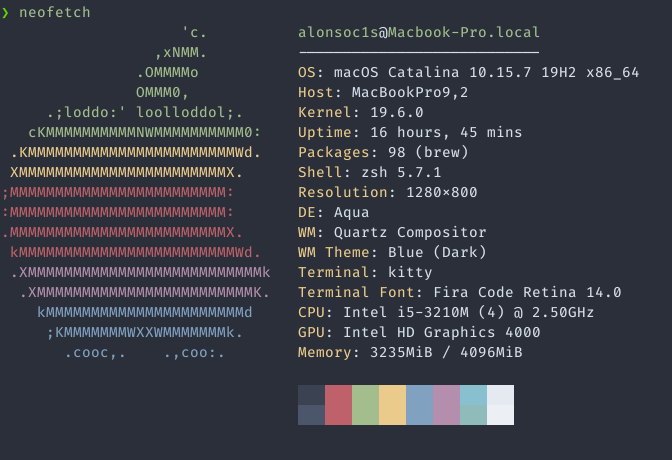

La terminal es muy poderosa
El contenido de este capítulo es principalmente ejemplos de cosas muy poderosas que se pueden lograr con la terminal. La mayoría construye sobre comandos que ya se han mencionado en las notas. Dicho eso, no siempre intentan ser claros, es un poco de motivación para perderle miedo a la terminal.
¿Ya mero acabamos?
Entre muchas comunidades de personas que programan es común usar las
palabras FIXME y TODO (To Do) dentro de los comentarios de programas
para marcar cosas que quedan pendientes, posibles errores o cosas por
implementar. También es muy común que proyectos no-triviales estén
distribuidos a través de muchas carpetas y muchos archivos. En un solo
archivo se podría "usar ctrl + f para buscar apariciones de estas
palabras, pero hacerlo archivo por archivo es menos que deseable. El
problem se puede resolver así:
$ grep '# TODO\|# FIXME' */* | wc -l
24
El resultado es un número, el número de apariciones distintas de
líneas que contengan el string "TODO" O "FIXME". El comando wc
cuenta palabras (word count), y cuando se le da el modificador
-l cuenta líneas en vez de palabras.
¿Qué tanto escribí?
Usando a nuestro nuevo amigo wc podemos contar las palabras usadas
en un archivo de texto. Una vez más, es común tener proyectos
distribuidos en muchas carpetas, en muchos archivos, y correr wc uno
por uno no es divertido. Se puede hacer esto mejor:
$ wc *
wc: figs: read: Is a directory
138 817 4942 files.md
55 319 1917 first_steps.md
29 240 1451 historia.md
28 222 1365 intro.md
24 156 1004 meta.md
302 1832 11584 nav.md
1 3 19 next_steps.md
99 691 4183 plumbing.md
1 2 12 scripting.md
28 195 1174 showoff.md
104 736 4538 utils.md
830 5274 32787 total
wc sin argumentos muestra de izquierda a derecha, el número de
líneas, el número de palabras y el número de bytes.
Terminal User Interfaces
Hay una buena cantidad de personas que le tienen tanto cariño a su
terminal que han encontrado maneras de representar solo con texto
elementos gráficos con tal de monitorear su trabajo sin dejar la
terminal. Dos ejemplos notables son htop, y btm.
htop es una utilidad que muestra una gráfica de uso de los núcleos
de procesador y una lista de los procesos que están consumiendo más
memoria o poder de procesamiento. Se ve asi:

Por su parte, btm es un sucesor espiritual de htop y trata de
hacer lo mismo con más información y una interfaz "más moderna".

Ambos htop y btm tienen propósitos prácticos. Hay otros comandos
menos útiles, como neofetch:

O bien, cowsay, que es poco útil pero tierno:
$ cowsay "Espero que te hayan sido útiles estas notas"
________________________________________
/ Expero que te hayan sido útiles estas \
\ notas /
----------------------------------------
\ ^__^
\ (oo)\_______
(__)\ )\/\
||----w |
|| ||